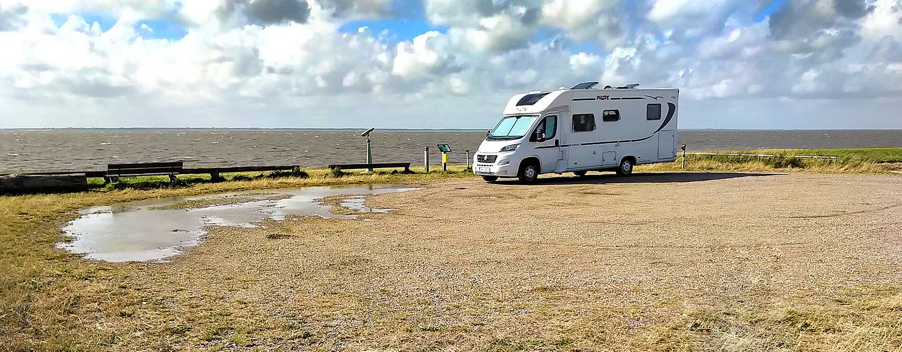
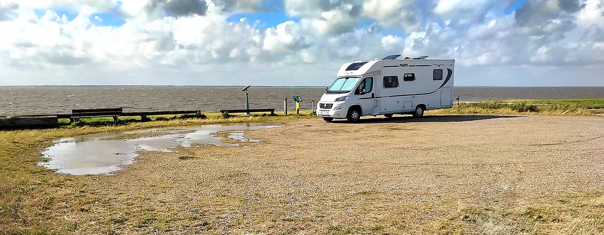
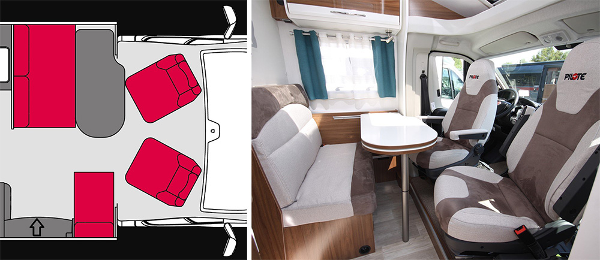
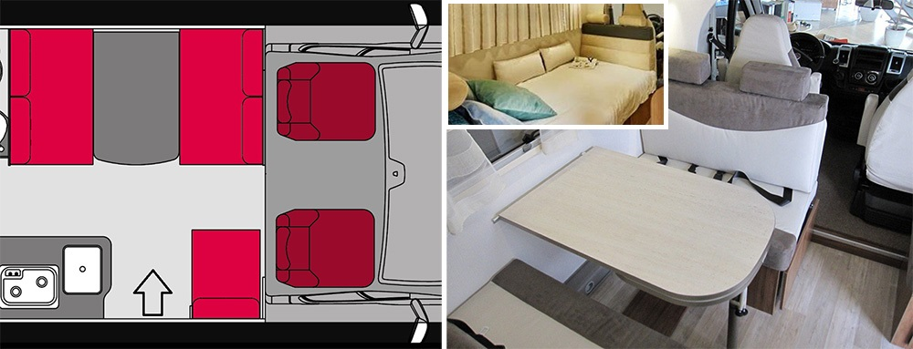
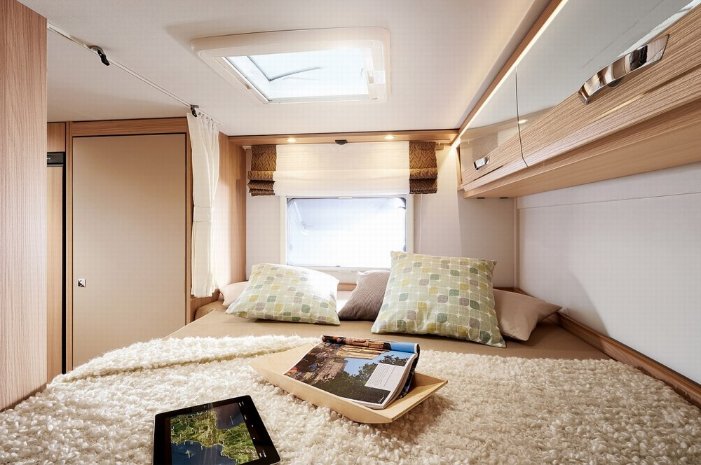
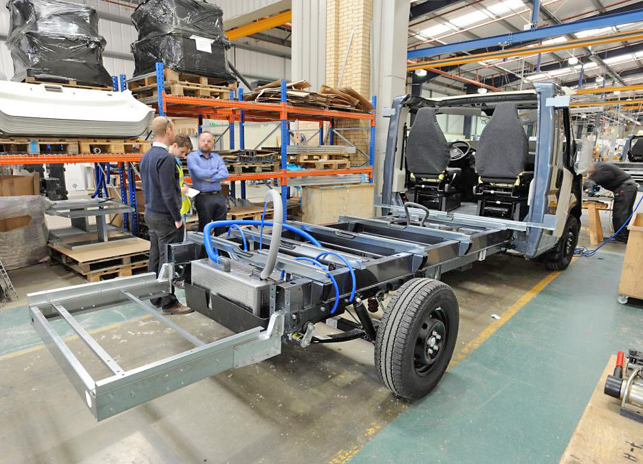
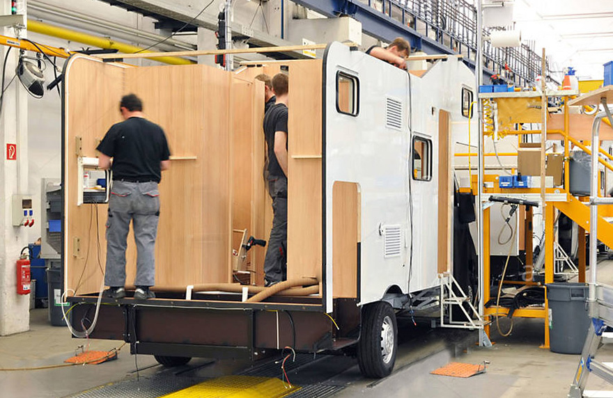
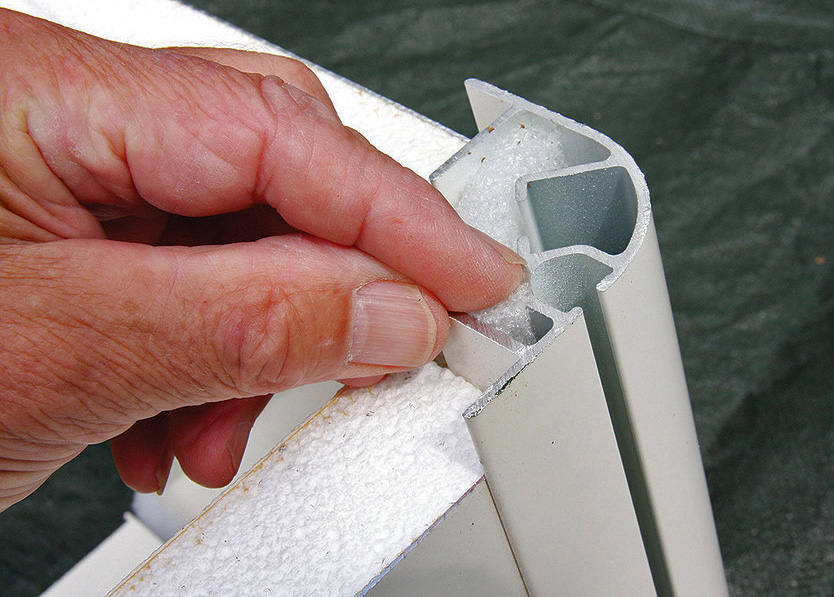
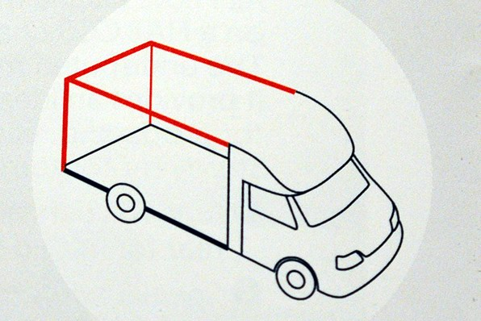
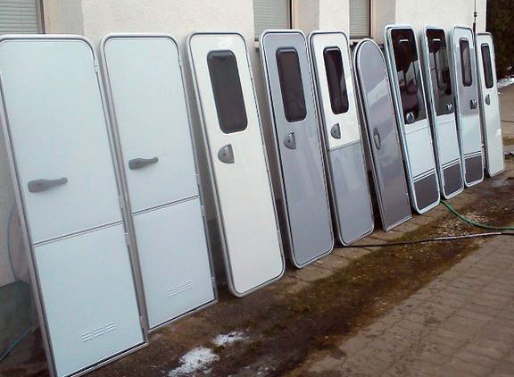

01.09.2019 - Jaký si vlastně pořídit obytňák?
V minulosti jsme si obytňáky půjčovali, teď už zhruba dva roky jsme s Janou "systematičtí nomádi", s vlastním autem. V srpnu roku 2017 jsme po pečlivém studiu všech možných materiálů a velmi detailní prohlídce výstavy Caravan Salon v Düsseldorfu, objednali našeho Dodíka. A od té doby jsem se postupně stal členem několika specializovaných skupin na Facebooku, sleduji různá diskuzní fóra, stále píši články na tyto stránky a pár článků mi vyšlo i v časopisech pro milovníky karavaningu. Vlastně se dost intenzivně a rád zabývám tímto úžasným koníčkem, kterým kempování s obytňákem bezesporu je. Prostě mě to, asi jako mnohé z nás, opravdu baví.
A právě na Facebooku, na diskuzních fórech, mě zaujala jedna věc: samozřejmě že diskuze jsou plné položených dotazů a odpovědí na ně. Ptají se většinou nováčkové, ale i zkušení cestovatelé. Jak udělat to či ono, co znaméná "todlecto tady", jak to vypadá tam či onde, jaké jsou zkušenosti s tímto kempem nebo stellplatzem, co musím mít a na co si dát pozor, když jedu tam či tam, ...... Dotazů jsou bambiliony. Některé jsou originální a jedinečné, některé se občas opakují a pár z nich jsou "evergreeny". U majitelů obytných přívěsů je třeba TOP1 dotaz na hmotnost soupravy a řidičák, který musím mít. U nováčků, kteří uvažují o obytném autě, je naprosto zásadní dotaz: Jaké auto si máme pořídit?
A kdykoliv se takový dotaz objeví někde v diskuzi, následuje spousta odpovědí a názorů, bohužel většinou ve stylu "Kup si tohle, mám to a jsem spokojen". Což podle mého názoru nováčkovi ale moc nepomůže. Protože tak, jak je široká nabídka na trhu obytných aut co do velikosti, provedení, vybavení, kvality zpracování, ... tak ještě širší je portfolio preferencí, zájmů a potřeb lidí, kteří o koupi auta uvažují. Proto jsem se rozhodl pokusit se napsat článek, který by se snažil v maximální možné míře nezaujatě a objektivně toto téma zpracovat. Prostě takový "rozhodovací klíč" pro budoucí nomády. Tady je. Snad bude některým z vás k užitku.
Při výběru nového auta se budeme postupně věnovat několika oblastem:
1) provedení obytného auta
2) vnitřní uspořádání, tedy layout
3) velikost, resp. délka auta
4) konstrukce a technologie nástavby
5) pár detailů, které se nadají po nákupu už měnit
Záměrně tu nebudu zohledňovat zcela základní rozhodovací parametr a tím je cena auta, resp. naše finanční možnosti. Rozhodovací klíč by měl být uplatnitelný jak pro 20 let starý obytňák z bazaru, tak pro fungl nový model, objednaný přímo u autorizovaného prodejce. Špatně zvolené provedení i nového auta může majitelům komplikovat budoucí cestování více, než dobře vybraný "veterán", který stojí třeba řádově méně. Proto je myslím daleko důležitější nejprve pečlivě zvolit provedení a pak podle stavu peněženky jít do nového nebo použitého auta. Tak a jdeme na to.
1) provedení obytného auta
V našich evropských luzích a hájích máme takové 4 základní kategorie obytňáků:
Více než 2/3 evropských výrobců obytňáků berou pro základ svých vozů platformu Fiat Ducato CCS. I když trendem posledních let je používat podvozky i dalších výrobců, Fiat zatím stále vede. Proto si ho vezmu jako příklad popisu rozdílů mezi jednotlivými typy obytňáků. Takže: u "vanů" (vestaveb) si výrobce obytných nástaveb koupí od výrobce automobilů (např. Fiatu) dodávku a tu předělá na malý obytný vůz. U "Alkovny" si koupí podvozkovou čast užitkového vozu, včetně kabiny řidiče (ta nemá střechu) a na tento podvozek postaví obytňák, kde nad kabinu dá tzv. alkovnu, což je ložnice pro dva lidi. "Alkovnu" tedy poznáte na první pohled podle té velké bambule s okny nad kabinou. U "Polointegrovaného" modelu si výrobce koupí od Fiatu to samé jako pro alkovnu ale místo ní dává nad kabinu jen aerodynamickou nástavbu, většinou s úložnými prostory a střešním oknem. No a u "plně integrovaného modelu" koupí Pilote pouze podvozek a na místě kabiny zůstává jen palubní deska. Plechová kabina, dveře, okna a někdy i sedačky řidiče a spolujezdce chybějí. Vše si staví výrobce obytňáků sám. A tak když vlezete do nějakého integrovaného vozu, tak můžete i tak najít starou známou palubní desku Fiat Ducato (nebo jiného výrobce "náklaďáků"). To, co tedy od např. Fiatu přijíždí za začátku procesu vzniku obytného auta do výrobních závodů u Hymerů, Dethlefssů, Adrií, Pilotů, Eura Mobilů, atd. atd. vypadá zhruba jako na následujícím obrázku. Zbytek už staví výrobce obytňáků.
Otázka č.1: Kolik vás bude jezdit pravidelně na cesty?
Zcela zásadní parametr pro správný výběr. V každém autě jsou buďto "pevná lůžka", tedy taková, která zůstávají v použitelném tvaru 24h denně. Pro jejich využítí stačí jen přijít k nim a lehnout si. Druhou variantou jsou tzv. "skrytá lůžka". To jsou taková, která jsou někde uschována. Typicky spouštěcí postel od stropu dolů. No a pak jsou "nouzová lůžka", to jsou ta, kde musíte vzít někde nějaké části polstrování např. sedaček, ty někam narovnáte vedle sebe a vznikne tak lůžko. I když se vás budou výrobci aut snažit přesvědčit, že "přesunutím opěrné části sedačky mezi sedáky vznikne snadno plnohodnotné lůžko", nevěřte jim. Za prvé to až tak snadné není a za druhé není toto lůžko rozhodně plnohodnotné. Povíme si ale dál.
Tím se dostáváme k otázce celkové kapacity osob, které mohou v obytňáku jezdit. Složeno do tabulky by to mohlo vypadat zhruba takto:
Čísla v závorce představují lůžka, která v tom kterém modelu auta být mohou, když je výrobce nabízí. Buďto v základu nebo za příplatek. Mimochodem, u všech aut výrobci uvádějí 3 různé kapacity ohledně osob na palubě:
1) Počet osob na spaní: to je práve počet lůžek (pevných, skrytých a nouzových dohromady), na kterých se dá vyspat. Lépe či hůře.
2) Počet osob na přepravu: obytňák je dopravní prostředek a jako takový musí zajistit řádnou, "homologovanou" přepravu osob. Tedy na sedadle a s bezpečnostními pásy. A tady je, dámy a pánové, to větší z omezení co největšího počtu osob na palubě. Ono vytvořit nějaká lůžka navíc všude možně, to by až tak velký problém nebyl ale vytvořit plnohodnotné sedačky na jízdu, to je větší oříšek. A logicky by počet osob na spaní a na přepravu měl být stejný. Maximální číslo, které jsem zatím viděl, bylo číslo sedm. A teď vůbec nebudeme brát v úvahu celkovou hmotnost, resp. nosnost vozidla. Jen ten homologovaný počet cestujících.
3) Počet osob u jídelního sezení: to už je číslo jen tak pro orientaci a udává počet lidí, kteří se vejdou alespoň trochu kulturně za stůl/stoly pro případný oběd či posezení. Prostě, aby každý měl svůj kus stolu pro talíř, příbor a nějaké to pití. Tady je většinou číslo o něco vyšší - na večerní posezení se do auta většinou dá nacpat i víc lidí než na spaní či jízdu.
Zlaté pravidlo č.1 říká: pořiďte si takové auto, kde počet pravidelně cestujících lidí (tedy každou cestu) bude stejný jako počet pevných lůžek.
Zlaté pravidlo č.2 říká: čím je věkový průměr posádky nižší, tím méně je nutné dodržovat Zlaté pravidlo č.1
A tady se už dostáváme do prvního úskalí, díky kterému prostě není možné sestavit nějaký pevný "vývojový diagram", podle kterého by zájemce šel, doplnil pár dat a vypadl mu ideální typ auta. Ono totiž všechno ovlivňuje vše. A počet lidí na palubě je toho zářným příkladem. Prostě ideální provedení auta podle počtu lidí (viz tabulka výše a Zlaté pravidlo č.1) vychází z toho, že lidé, kteří v autě spí, by v něm měli mít možnost i rozumně přebývat. Tedy sedět, jíst, hrát třeba nějaké stolní hry, číst si, starat se o hygienu, mít možnost se alespoň trochu někam "zašít", apod. Pak platí Zlaté pravidlo č.1. Ale co když jezdím jen do kempu, kde na začátku dovolené přijedu, postavím předstan, do něj dám sezení, gril, případně dokonce televizor, atd.? No tak mám o jednu velkou místnost navíc! A když je pak v autě "rozložené ležení" třeba pro 6 lidí, tak se tam i tak dá velmi snadno žít a užít si kempování. Co když ale stejná skupina 6 lidí vyrazí nadivoko na dovolenou, kde každý den musí zůstat jen ve voze ? Situace bude zcela opačná. Takže je to zároveň i o poměru hodin v rámci dne, které přímo v autě strávíte. Když to bude parta rybářů, která bude od pěti hodin ráno sedět někde u vody, večer zapnou grill, otevřou nějakou tu lahvinku a spát jdou po půlnoci, tak pro 5 lidí postačí i malý "van" neboli vestavba. Může mít i dvě dvojlůžka nad sebou, ten pátý nějak zkroucený v přední části, místa sice jako v ponorce ale kdo by to na těch pár hodin spánku řešil. "Dyk sme stejně furt venku"!
Zrovna provedení "van" je tedy primárně určeno pro dvojici lidí. A navíc aktivní dvojici, která se často přemisťuje, tzn. ocení výhody malého půdorysu auta, hodně času tráví mimo vozidlo a tak je pro ně hlavné výhoda malé vnější rozměry vozu, jeho průjezdnost, nižší spotřeba pohonných hmot. atd. A ze stejného důvodů pokud někdo tvrdí, že van je pohodě pro pravidelné jezdění čtyř lidí, tak prostě vychází jen ze své individuální zkušenosti ale jsem přesvědčen, že většině lidí by takto používaný van nevyhovoval. I u rodin s malými dětmi si troufám říct, že když by mi po celou 3 týdenní dovolenou spaly nad hlavou malé děti, tak by mi jako chlapovi nedostatek prostého soukromí s vlastní manželkou taky za chvilku vadil ;-)
Prostě vyjma vyjímečných případů (třeba jako ten s rybáři), bych se za Zlaté pravidlo docela postavil. Ano, počet pravidelně cestujících lidí by měl korespondovat s počtem pevných, nebo alespoň skrytých lůžek. Ono totiž lůžko není jen o té ploše na spaní ale i o polšťáři, dece či peřině, u někoho o spacáku, atd. A když z lůžka ráno udělám zase zpátky sezení, někam musím dát ty lůžkoviny. A nepořádek na palubě narůstá...
Navíc, není skryté lůžko jako skryté lůžko. Protože samozřejmě velmi obvyklý počet cestovatelů jsou čtyři, většinou dva rodiče a dvě děti, pojďme si takovou běžnou rodinu posadit do různých typů obytňáků:
1) Jedou s VANem. Rodina (třeba Novákovi, táta, máma, syn a dcera školou povinní), jezdí vždy spolu. Pořídí si VAN, tedy vestavbu, se dvěma dvojlůžky nad sebou. Cestování bude v pohodě, auto se dostane všude. Když jsou někde na pláži a prší, mohou být i uvnitř, navíc mají třeba i markýzu. prostě žádný větší problém s prostorem. Snad jen, pokud máma stojí u malinké kuchyňské linky, okolo ní dozadu nikdo neprojde. Koupelna u vanů je také ale hodně malinká. A vyspání není nic moc, protože jsou všichni natěsnáni nad sebou, jen s pár decimetry prostoru nad hlavami.
2) Jedou polointegrovaným autem: Tady už je prostoru fůra, žití uvnitř vozu není skoro nijak omezeno. Máma má na vaření větší, skoro plnohodnotnou kuchyň, okolo se dá krásně procházet dozadu na WC či do koupelny, vzadu v ložnici může někdo zůstat a třaba číst si na posteli, vpředu u sezení si lze hrát nebo sledovat televizi, atd. Teprve na noc přichází omezení. Horní dvojlůžko sjíždí dolů a život v obytné části vozu se zastaví. Takže u polointegrovaného provedení se buďto v "obyváku" žije, nebo spí. Více jsem se to snažil popsat v článku Polointegrovaný nebo integrovaný model?
3) Jedou integrovaným autem: Větší vnitřní prostor velmi dobře řeší i noc. Děti jsou na sklopné posteli nad řidičem a spolujezdcem, většina vnitřního prostoru i v "obýváku" zůstává provozuschopná. Opět popsáno ve výše zmíněném článku.
4) Jedou s alkovnou. Nejluxusnější řešení pro rodinu. Děti spí (většinou) nad kabinou v alkovně, rodiče vzadu. Soukromí zajištěno, děti mohou do svého "bunkru" klidně i přes den, mají prostě vlastní království (vč.případného závěsu či jiné zástěny) a když sebou vezmou jednou za čas 1-2 kamarády nebo babičku s dědou, alkovny mají většinou možnost i dvou dalších nouzových lůžek, takže pro tu zábavu (jednou za čas na víkendový výlet) provedení alkovna stále skvěle vyhovuje.
PROVEDENÍ AUTA: ZÁVĚR A DOPORUČENÍ (pro PRAVIDELNÉ jezdění):
dvojice: podle stáří a míry aktivity: (od aktivní a mladí) van -> polointegrovaný -> integrovaný model (po starší a pohodáři)
rodina 2+1(2): alkovna nebo integrovaný model
2 dospělé páry: alkovna, jen trochu horší bude volba integrovaného modelu, v nouzi polointegrovaný model
rodina více než 4: rozhodně alkovna
No a pokud už nyní víte, že budete jezdit jen a jen do kempů, většinou na víc dní, a že vždy postavíte předstan nebo alespoň vysunete markýzu tak, aby vzniklo sezení venku, tak o jeden stupeň můžete slevit. Mimochodem, když my jsme objednávali Dodíka, byli jsme 100% přesvědčení, že budeme jezdit jen a jen do kempů. A už během první sezóny jsme se stali 100% divočáky. Takže ani původní plány nemusí být platné navždy....
Otázka č.2: Berete sebou domácí mazlíčky?
Většinou se jedná o pejska či pejsky. A pochopitelně, jedna čivava a párek bernardýnů vyžadují rozdílné podmínky i v obytném autě. Tady je bohužel ještě méně obecných pokynů, nežli v případě lidí. Psi jsou různých velikostí, majitelé mají různé "toleranční hranice", co pes ještě smí a co už ne (některý má pevně vyhrazený kotec a jinam nesmí, jiný spí přímo s majiteli v posteli). Každopádně jakýkoliv větší nežli polštářový pes, představuje prostorový nárok, nad kterým je třeba se zamyslet. A pokud je psů i víc, stojí rozhodně za úvahu vytvoření speciálního oddílu, většinou v garáži či v její části, která bude přesně pro potřeby mazlíčků uzpůsobena. Mnoho výrobců takovou úpravu klidně udělá přímo při výrobě, většina místních specializovaných firem dokáže obytňák upravit i dodatečně. Každopádně je pes další člen rodiny a pokud se v provedení budoucího auta rozhodujete mezi dvěma možnostmi, se psem na palubě vždy volte to větší.
2) Vnitřní uspořádání, tedy layout
Vnitřní uspořádání auta musí vycházet ze zvyklostí posádky, jejích preferencí a životního stylu. I když moderní auta jsou si uvnitř na první pohled dost podobná co do rozložení (málo platné, optimálních řešení prostě nevymyslíte nekonečné množství), přeci jen jsou rozdíly a možné varianty a ty si teď zkusíme představit. A vezmeme to odpředu, od kabiny řidiče:
A) obývací část, sedací prostor ("salón")
U drtivé většiny aut následuje za prostorem pro řidiče a spolujezdce sedací kout. V průběhu let se drobně vyvíjel a v současné době naleznete v nabídkách tato základní provedení:
A1 - pevný stůl
Jedno z nejobvyklejších řešení. Najdete ho ve všech vanech (vestavbách), tam se jiný design ani nevejde. A tvoří základní provedení pro polointergrované a dokonce i pro některé integrované vozy. Stůl je svojí kratší stranou přichycen ke zdi a většinou umožňuje na kolejnici drobný posun v podélné ose auta, tak o 10-15cm. Také většinou disponuje otočnou částí, kterou můžete v případě potřeby vysunout a nabídnout tak stolní plochu i člověku sedícímu na sedadle vedle vstupních dveří. Je to ideální provedení, když na dvojsedačce cestují malé děti. Stůl je dost velký a stabilní pro případné hry nebo kreslení za jízdy a ta strana spojená se zdí umožňuje odkládat do rohu např. pastelky, karty, hry, atd. Ty pak méně ochotně padají na zem. Ve spojení s otočenými sedadly řidiče a spolujezdce tak vzniká sezení pro 4 lidi, případně 5 lidí, když je sedadlo i na stěně vedle vchodu do nástavby. Firmy někdy za příplatek nabízejí i možnost stůl snížit na úroveň sedáků, pak vezmete polštář opěradla, položíte ho na stůl a vzniká tak právě jedno z nouzových lůžek. U Vanů se mi zase moc líbí řešení firmy Pilote, kdy stůl i s nohou můžete vyjmout z auta a nacvaknout ho venku na boční stěnu. Pak už stačí jen kempové židličky a máte plnohodnotné venkovní sezení. A o stůl méně, který musíte tahat sebou.
A2 - pevný stůl v alkovně
V alkovnách v drtivé většině případů bývá toto řešení, kdy jsou okolo stolu pevné lavice dvě naproti sobě a sedadla v kabině řidiče nejsou otáčecí. Důvod je jasný: k dispozici je tak šest homologovaných míst pro jízdu, vybavených bezpečnostními pásy. No a dva lidé spí v alkovně, dva vzadu v ložnici, a poslední dvojice cestovatelů musí vzít zavděk nouzovým dvojlůžkem. To se stůl opět sníží na úroveň sedáků, jeden nebo oba polštáře opěradel se dají na něj a vzniká sice docela úzké, ale přeci jen dvoulůžko (viz. malý vložený obrázek uprostřed). Trochu hrbolatý a ne moc velký ale na víkend pohoda.
A3 - Posuvný stůl středový
Tohle je zatím asi nejobvyklejší provedení v polointegrovaných a integrovaných autech. Stůl je připevněn na jedné noze a dá se s ním pohybovat ve všech čtyřech směrech. Někteří výrobci montují i mechanismus umožňující otáčení desky stolu kolem své osy. Výhodou tohoto řešení je možnost vybavit vůz různými formami rohové sedačky. Ta umožňuje více variant posezení či "pohovění" si, sezení vypadá o poznání elegantněji nežli A1 a A2 a posuvný stůl usnadňuje usedání a vstávání. Pohybující se osoba prostě odsune stůl stranou své cesty. Stůl samozřejmě nabízí i možnost aretace v jakékoliv poloze. Velkou nevýhodou ale je ale fakt, že pokud jedou autem 4 lidé, musí ten čtvrtý před jízdou část sedačky co je zády k oknu buďto sklopit nebo rovnou vyjmout (podle výrobce). Ten u okna na dvojlavici by totiž neměl místo pro nohy. A tak je toto řešení výborné pro dvojice, maximálně pro trojice. Vícečlenná posádka je totiž zase odkázána na nutnost častých úprav. Ale opět - když je celá dovolená v jednom kempu a jede se jen z domova tak a zase zpět, dvě machinace se sedací soupravou se klidně přežijí.
A4 - Výklopný stůl středový
Co platí u osobních aut, platí i u obytňáků. Mnoho z výbavy a řešení, jenž byly původně určené pro větší vozy vyšší třídy, se postupně objevuje i u tříd středních či dokonce nižších. Platí to i o řešení A4. Tady je stůl také středový ale skládá se ze dvou polovin vybavených pantem. Takže není-li potřeba velká plocha stolu, zůstává sklopená a kolem sezení je spousta místa, hlavně pro průchod do prostoru řidiče. No a v případě potřeby se stůl "překlopí" a zvětší tak dvakrát svoji plochu. Stůl je opět ve všech směrech posuvný. Výrobci toto řešení dává mnohem více možností jak tvarovat sedací soupravu a tak se můžeme setkat opravdu s mnoha variantami. Záleží na tom, jestli výrobce ten který model koncipuje jako luxusní obyvák (kde moc neřeší počet homologovaných míst pro jízdu) nebo jako příjemné posezení ale s možností minimálně 4 sedadel vybavených pásy. Donedávna byla A4 doménou integrovaných vozů hlavně vyšší hnotnostní třídy, teď už proniká i do polointegrovaných aut do 3,5t.
SEDACÍ PROSTOR: ZÁVĚR A DOPORUČENÍ:
Opravdu si rozmyslete, co všechno a jak často budete u stolu dělat. Každý den jíst? Každý den si tu budou děti hrát? Budete u něj něco bouchat do notebooku? Budete u něj sedět i večer, bavit se či sledovat televizor? Co z toho budete dělat hlavně venku pod markýzou nebo v předstanu? Nebudete vevnitř jen za špatného počasí? A jsme opět i u stylu jezdění. Např. my jsme 100% divočáci. I když nějaký kempingový nábytek sebou v garáži vozím, vytahujeme jej tak jednou za 50 večerů. Jinak spíme nadivoko a sezení ven nedáváme. Ve spoustě oblastí je totiž kempingové sezení venku rozdíl mezi parkováním a kempováním, které tam může být zakázané. Takže v našem "obýváku" trávíme každý večer dlouhé hodiny. A dokonce jsme sezení i měnili (článek ZDE). Nebo jsme televizor umístili zcela jinam, než ho plánoval výrobce (článek ZDE). Takže si velmi dejte záležet na přemýšlení o činnostech při každodenním životě na cestách a "umisťujte" tyto představy na různé typy sezení. Nebo si je někde na výstavě raději všechny vyzkoušejte. Pečlivost a trocha investovaného času se jistě vyplatí.
Pozn.: Samozřejmě existují i další varianty sezení ale ty jsou většinou okrajového rázu. Např. v alkovnách bývají i na stěně vedle vchodu dvě další sedačky proti sobě a mezi nimi malý stůl. Tak se 6 lidí může pohodlně najíst najednou. Nebo se filozofie vnitřního uspořádání auta zcela obrátí a v zadní části vozu je veliké sezení okolo velkého středového stolu. A předpokládá se, že posádka spí na sklopné posteli nad řidičem (např. luxusní Carthago Liner-for-two). Obecně dražší auta mají i díky většímu postoru více variant sezení. Troufám si ale říct, že v 90% aut potkáte některé z výše popsaných provedení.
B) kuchyňský kout
Posuneme se o kousek dál a mrkneme na prostor pro přípravu jídla. Opět je velký rozdíl v požadavcích na tuto část auta u posádky, která připravuje jídlo "doma" 3x denně po celou dovolenou a druhé posádky, která chodí na jídlo "ven", tedy do restaurací, bister v autokempu, atd. Kuchyň v obytném autě je hlavně o velikosti pracovní desky, počtu úložných prostor a praktičnosti rozložení. U této kapitoly se musím čtenářům omluvit, prostě se mi nedaří být až tak objektivní, jak bych si přál. Považuji totiž naší kuchyň v Dodíkovi (Pilote P746C, ročník 2018) za stále nejlepší, co jsem v autech do 3,5t viděl. A to jsem se snažil. Dokonce jsem provedl v jednom článku dost pečlivé porovnání (článek je ZDE). V tom článku je i spousta fotek různých kuchyní a nováček může vidět, jak obrovské rozdíly jsou mezi jednotlivými výrobci. V životě jsem si prohlédl, ba i prostudoval, mnoho desítek kuchyní v obytných autech a mám pocit, že u mnoha výrobců je z mého pohledu u kuchyní až nezdravě mnoho obětováno designu. Aby prostě v interiéru auta dobře vypadala. Samozřejmě že se všichni snaží i o funkčnost, ale...
A tak tuto kapitolu (ale jenom tuto) pojmu tak, že představím naší kuchyň, co na ní považujeme za skvělé, dobré a praktické. Je na čtenářích, aby porovnávali, připadně se rozhodli, co je důležité i pro ně. Čtyři fotky té naší kuchyně jsou pod touto kapitolou.
Prostor na pracovní desce: Ten by jednoduše měl být co největší. To se hodí nejen pro nějaké velké vaření ale i pro prostou přípravu snídaně. Na té naší kuchyni se nám líbí, že pracovní prostor i bez krytů dřezu a sporáku je prostě obrovský a také, že začíná hned u přední hrany kuchyňské skříňky. Podívejte se na jiné kuchyně, kde se při např. krájení na prkénku musíte nahýbat někam dozadu právě přes dřez či sporák, kde je první volná plocha. Pracovní prostor by prostě měl být nejblíže kuchtíkovi a měl by poskytovat i další volná místa pro často používané věci. V našem případě je to kávovar Nespresso. Stojí stále na lince vzadu vpravo, je tedy bokem, vůbec proto nepřekáží a není nutné ho nějak složitě schovávat (vč.různých výsuvných mechanismů) někam do skříněk, kde prostor potřebujete na jiné věci.
Při vaření to občas prská: Podívejte se na okolí sporáku a představte si, že na něm je třeba pánev, na které se něco smaží. Jsou všechny okolní plochy (vodorovné i svislé) dobře omyvatelné ? Je mezi kuchyní a opěradlem sedačky dostatečně vysoká přepážka, aby se sedačka nedala zašpinit? Tady i když dřevěná dýha vypadá na desce velmi dobře, tak myslím že vítězí odolné, tvrdé a hladké povrchy. U nás je k nezaplacení boční černá skleněná ochrana stěny. Perfektně umístěná a snadno čistitelná.
Co připojení spotřebičů? Je až překvapivé, jak málo výrobců počítá s tím, že by v kuchyni mohl být zapojen nějaký elektrický spotřebič. A přitom je to stejně důležité, jako v domácí kuchyni. My máme v rohu těsně nad deskou tři zásuvky. na 12V, na 220V a USB nabíjení. Všechno universální rozměry, takže výměna zbytečné 12V zásuvky na další 220V je snadná záležitost. A máme tak stále zapojen jak kávovar, tak rychlovarnou konev (článek ZDE).
Ve dřezu pracujete s vodou: dřez musí být dostatečně velký a také hluboký, aby voda při omývání nádobí necákala všude možně. Ze stejného důvodu se vyhněte řešením kuchyně, kde dřez je přímo na kraji pracovní desky (to platí i pro umyvadlo v koupelně). Alespoň pár centimetrů pracovní desky okolo dřezu hodně pomůže, aby podlaha nebyla stále mokrá.
Kryty dřezu a sporáku: vyrábějí se buďto skleněné, pevně uchycené pantem a v pracovní poloze se jen odklopí, a nebo jsou to volné poklopy, většinou ze stejného materiálu jako je pracovní deska. Ty volné vypadají jako výhoda, můžete je zcela sejmout a někam odložit. Když jsme s nimi měli v půjčených autech co dočinění, tak prostě furt někde překážely a hlavně, za jízdy byly dalším zdrojem nepříjemných zvuků. V Dodíkovi máme ty skleněné na pantu a naprostá spokojenost. A znovu, díky velké pracovní ploše plochu deklů ani vlastně nepoužíváme.
Skříňky pod pracovní deskou: až budete vybírat svoje auto, VŠECHNY skříňky a šuplíky pečlivě otevřete a prozkoumejte. Jejich hloubku, výšku, šířku. Díky technologiím a rozvodům, které pod kuchyňskou linkou většinou vedou, mohou být některé zásuvky až překvapivě málo hluboké. Odstrašujícím příkladem je zvenku krásný a luxusní obytňák Niesmann-Bischoff Smove. On ten auťák celou svou filozofií přímo řve, že je hlavně o designu, za který získal i cenu. Ale praktičností je to hrůza. Třeba chemická toaleta v koupelně se "chytře" zasouvá do zdi, aby koupelna byla na sprchování větší. No ale za tou zdí je právě kuchyňská skříňka. Když pominu, že chemický záchod zajíždí do kuchyně, tak když otevřete, zvenku se tvářící, "velký" šuplík, tak zjistíte, že vyjede s bídou tak na 10cm a konec. Prověřte si tedy, že "vaše" kuchyně má prostor pod pracovní deskou opravdu co nejlépe a nejefektivněji využitý.
Budou i odpadky: Při vaření i běžném provozu v autě prostě vznikají odpadky. V kuchyni by tedy měl být jeden šuplík tak dostatečně vysoký, aby pojmul slušně dimenzovaný odpadkový koš. Pilote má obrovský šuplík, kde máme dokonce dva koše (třídíme) a ještě do něj dám 5litrový barel vody a navíc velkou roli papírových utěrek. Třeba renomovaný Hymer Tramp SL má všechny zásuvky vysoké jen tak 15cm. Nic moc. Spousta výrobců pak dává odpadkový koš do venkovních dveří. I my tam máme takovou přihrádku, do které by se koš dal nacvaknout. Už ale vidím, jak při vaření s každou vaječnou skořápkou běhám ke dveřím, nehledě na možný zápach v nejfrekventovanější části auta. Takže ve dveřích máme jen smetáček a lopatku, kde se hodí daleko lépe. A proto jeden hluboký šuplík v kuchyni je skoro podmínkou.
Zvláštní šuplík na pečivo: Možná je to až zbytečná změkčilost ale pečivo prostě chceme mít zvlášť. V Dodíkovi je velmi šikovný šuplík pod chladničkou, který jsme vyčlenili jen na chléb, pečivo, sušenky, atd. Je rychle přístupný, dobře čistitelný, takže pohoda.
Chladnička: Do moderních aut se dávají moderní mašiny, běžící na 220V/12V/plyn, s inteligentním přepínáním a tak zbývá jen rozhodnout jak velkou chladničku pro své podmínky potřebujete. I když jsme jen dva, jsme moc rádi za největší provedení od Dometicu, se samostatným mrazákem, který opravdu mrazí :-) Sice to chvilku trvalo, než jsem našel ty správné rozměry ale potraviny nedáváme přímo do přihrádek chladničky ale do plastových boxů, které jako šuplík přesně do každé přihrádky pasují. Před odjezdem doma Jana nahází vše do těch boxů, já si je naskládám na sebe, přenesu do Dodíka a postupně zasunu do jednotlivých fochů. Tři vteřiny, potraviny jsou v chladničce a zavírám dvěře. Zvláště v létě opravdu neprospívá delší "větrání" vychlazeného prostoru. Navíc, když se něco vyleje, tak do boxu a ne do chladničky.
Kam dávat víno a větší láhve: Asi každý z nás vozí i nějaké ty skleněné láhve. Víno, destiláty, atd. Kdyby byl Dodík ve vyšším výbavovém stupni, byla by v tom krásném hlubokém šuplíku pod dřezem přepážka s asi pěti otvory na láhve. To je ale hned méně prostoru v šuplíku pro cokoliv jiného. My máme destiláty a zásobu vína ve skříňce nad chladničkou, kde měl být poměrně neprakticky umístěn výsuvný televizor. Prostor po televizoru je vysoký a vejde se tam karton vína i na výšku. Takže super! Někdy se vyplatí chvíli přemýšlet a trochu upravit i původní, výrobcem plánované rozložení.
Jsou zásuvky fortelné ? Co určitě pečlivě zkontrolujte, je konstrukce šuplíků. Mají dna a také pojezdy dostatečně pevné základy, aby těžší věci dovnitř uložené a za jízdy se různě natřásající, postupně šuplík nezničily? Zvláště ty hluboké zásuvky. V tom našem je opravdu pevné dno, navíc s výztuží, takže uložený 5kg barel s vodou nám za dva roky žádné nepříjemnosti nepřinesl.

C) koupelna a WC
A jako v každé kapitole začínám konstatováním, že bude ooobrovský rozdíl mezi posádkou, která jezdí jen anebo většinou do kempů, využívá sprchy, umývárny a toalety tamtéž a koupelnu v autě mají tak na běžné umytí rukou. A na druhé straně jsou divočáci, kteří palubní koupelnu využívají opravdu naplno. Ti by měli věnovat velkou pozornost jak celkové praktičnosti, tak i drobným detailům. Takže se na tuto část auta podíváme hlavně z jejich pohledu.
Provedení koupelny v obytných autech nejčastěji používané se dá rozdělit do zhruba čtyř skupin:
C1 - vše na jednom místě
V malých autech, tedy hlavně vanech a ostatních do délky tak 6,5m, není pro plnohodnotnou koupelnu prostě dost místa a tak je v tom samém prostoru jak chemický záchod, tak umyvadlo, tak možnost sprchování. Vše se děje na jednom místě. Výrobci obytných aut se předhánějí v návrzích, jak prostor co nejlépe koncipovat. Podíváte-li se na tento trojobrázek, mužete vidět: vlevo je řešení se záklopným umyvadlem a zasouvacím záchodem. Takže když se sprchuji, zaklopím umyvadlo, zasunu toaletu a vše oddělím závěsem. Fotka uprostřed zase ukazuje časté řešení z menších polointegrovaných a integrovaných aut. Vlevo toaleta, vpravo stěna s umyvadlem a zrcadlem. Když se chci osprchovat tak uvolním malou bílou pojistku (nad baterií) a celou stěnu otočím na pantu (ta stříbrná vertikální trubka) o 90° doleva. Umyvadlo se dostane nad toaletu a pravá část bude sprchovým koutem. No a vpravo je koupelna bez nějaké velké kreativity prostě sestavena do jednoho místa. Výhoda řešení C1 je jedna, nevýhod je víc. Výhodou jsou samozřejmě minimální rozměry, které koupelna v autě zabírá. Nevýhody: sprchováním namočíte všechno okolo, takže mít v poličkách propriety, kterým voda škodí nebo ručníky na věšácích, prostě není možné. Alespoň na nás nepůsobí ani dobře, když při sprchování mohutně vodou zaléváte i jednotku chemické toalety. Další nevýhodou je, že po takovém sprchování je prostě všude mokro a tak pro dalšího návštěvníka koupelny představuje prosté umytí rukou či použití WC většinou nebezpečí stoupnout si do mokra. Ano, existují různé teakové podložky, atd. ale to není dokonalé řešení. Další nevýhodou je, že kabina je prostě hodně členitá. A do všech těch koutů a štěrbin teče při sprchování voda. A časem se objeví řasy a pak plíseň. Jednoduše: čím méně míst, kde se může držet vlhkost, tím lépe. Obecně také platí, že čím více plastových, tvarovaných dílů (panelů/držáků/ atd.) je v koupelně, tím více problémů bude v budoucnu. V autě jsou totiž během roku teplotní výkyvy od třeba -20°C až klidně do +40°C. Stačí pár let a plast zkřehne a praskne. Takže ty různé překlápěcí stěny, které vypadají na první pohled jako zajímavé řešení, nejsou z hlediska dlouhodobého používání to úplně nejvhodnější. Můj názor je, že podobně koncipované koupelny jsou na občasné používání a že vyhoví lidem, kteří většinu dní a nocí tráví v kempech, v dosahu umýváren a WC.
C2 - koupelna se sprchovým koutem
Tady je koupelně už věnováno více místa a tak je sprchový kout samostatný a lépe či hůře oddělený od zbytku koupelny. Plexisklovými (u drahých aut i skleněnými) dveřmi, posuvnou roletkou či plexi panely, apod. Toto už je víceméně plnohodnotné řešení i pro běžný provoz. Sprchový kout zadrží vodu, zbytek koupelny zůstává suchý. Tedy pokud je zástěna udělaná s rozumem. Je až překvapivé, kolik řešení přepážek do sprchového koutu není pro vodu překážkou. Vím, že se to např. na výstavě těžko zjišťuje ale prohlédněte si řešení ve vytipovaném autě a představte si "cestu vody". Nepoteče tady tudy? Nebo tudy? Sprchový kout by měl mít i dostatečně hlubokou vaničku nebo vysokou přepážku do koupelny. U těchto integrovaných řešení si také zkontrolujte velikost sprchového koutu. Prostě do něj vlezte a zavřete za sebou přepážku. U některých modelů je to spíš taková svislá úzká trubka nežli sprchový kout. A když máte pár kilo navíc.... A platí pravidlo, čím je kontrukční řešení jednodušší, tím méně problémů bude do budoucna.
C3a - WC a sprcha naproti
U obytných aut délky cca 7m a více je poměrně časté řešení, kdy na jedné straně auta je "koupelna", tedy místnůstka s toaletou, umyvadlem a úložnými prostory pro osobní hygienu, a na druhé straně (přes průchod mezi kuchyní a ložnicí) je samostatný sprchový kout. Tady si dovolím tuto variantu rozdělit podle svého přesvědčení na dvě skupiny. C3a se mi nelíbí. Oba prostory, tedy koupelna a sprchový kout totiž v podstatě nejsou propojeny. Ano, co se poměrně často objevuje, jsou dveře od koupelny, které mohu otevřít, otočit o cca 90° a uzavřít jimi průchod do kuchyně a přední části vozu. Nebo zásuvné dveře se stejným efektem. Vzniká tak soukromý prostor koupelna-sprcha-ložnice. Na první pohled dobré. Na druhý - když se sprchujete, tak všechna pára a vlhkost jde dozadu do ložnice a vpíjí se do ložního prádla. Což není nic moc. Za daleko lepší řešení považuji provedení C3b.
C3b - opravdová koupelna
I tady je místnost se záchodem a umyvadlem na jedné straně a sprchový kout na druhé. I tady je možné dveře od koupelny použít i na oddělení se od přední části auta. Ale sprchový kout má pevnou boční stěnu, která ho zcela odděluje od ložnice a navíc jsou tu ještě jedny posuvné dveře, které oddělí koupelnu od ložnice a mezi oběma dveřmi tak ze sprcháče, kousku chodby a místnosti s WC a umyvadlem vznikne opravdová oddělená koupelna. Takže za prvé stoprocentní soukromí a za druhé vlhkost se drží pouze a jenom v koupelně a uniká větracími střešními okny ven. Další výhodou je, že sprchový kout může být větší a hlavně (a zase se vracím k té jednoduchosti), je to vlastně čistý, pravidelný kvádr. Tři pevné a hladké stěny a na čtvrté jen plexi dveře. Udržba je snadná, kontrola možných netěsností také (není nic horšího, než když vám někde z koupelny začne zatékat do nástavby). Prostě minimum problémů do budoucna. C3b je můj favorit.

{kind=link}
{kind=link}
{kind=link}
{kind=link}
{kind=link}
{kind=link}
{kind=link}
{kind=link}
{kind=link}
{kind=link}
{kind=link}
{kind=link}
{kind=link}
{kind=link}
{kind=link}
{kind=link}
{kind=link}
{kind=link}
{kind=link}
{kind=link}
{kind=link}
C4 - umyvadlo v čele
Už jen pro doplnění. Pár let zpátky se toto provedení objevovalo u luxusních (dlouhých) obytňáků a v posledních letech se začíná objevovat i u vozů střední třídy. Úplně poprvé jsem ho zaregistroval v roce 2012 u krásného modelu Bürstner Grand Panorama. Mimochodem, vyráběl se jen do roku 2015, což je velká škoda. Jeho čelní zvýšené sklo muselo poskytovat neuvěřitelný pohled za jízdy. A asi bylo také příčinou konce výroby. Cena čelního skla musela být šílená. Tak tenhle model, se zadní středovou postelí, dal do čela postele přepážku a na ní umyvadlo. Zároveň ze strany ložnice vznikla ideální stěna na umístění televizoru. Takže si cestu do ložnice přes koupelnu můžete vybrat. Zleva nebo zprava. Na jedné straně míjíte WC, na druhé sprchový kout a dveřmi (tady byly dokonce troje) se opět můžete v koupelně zavřít. Copak v devítimetrové Grand Panoramě to byl velmi zajímavý designový počin ale současní výrobci se tento design snaží nacpat do běžných aut 7-7,5m. Aby se odlišili. A výsledkem je málo místa a tak do koupelny musíte buďto přímo přes sprchový kout nebo se na druhé straně protáhnout okolo záchodu. Prostě tohle provedení bežně velkým autům prostě nesedí a pokud ho někde objevíte, utíkejte od něj.
{kind=link}
Malá odbočka, snad se čtenář nebude zlobit.
Když už jsem zmínil model Bürstner Grand Panorama i920G, neodpustím si Vám ho alespoň trochu představit. Takže d/š/v: 9/2,3/3m, 5tun. 3 nápravy, Al-Ko podvozek Fiat Ducato, motor 3,0l/180hp. Takže vlastně úplně normální, jen trochu přerostlý, obytňák. Jak jsem již psal, vyráběl se pouhopouhé tři roky. Přesný důvod, proč zastavili výrobu neznám. Ale posuďte sami z jedné fotky čelní partie tohoto úžasného auta a z krátkého videa z interiéru. Vám by se takový mazlík nelíbil?
{kind=link}
D) ložnice
Zadní část současného obytného auta většinou zaujímá ložnice. V dobách minulých se s layoutem obytňáků experimentovalo daleko více, zkoušely se palandy, na zadní nebo na boční stěně, u malých aut byla někdy vzadu i kuchyňka, atd. I dnes se podobná rozložení objevují ale tvoří jen zanedbatelné procento nabídky. Jen jako její doplnění, případně obzvláštnění. Představíme si tedy současné základní typy zadních ložnic.
D1 - Dvě postele podélně
{kind=link}
Nejpoužívanější současné rozložení, které má mnoho výhod. Za prvé délka postele je většinou poctivé dva metry. Pro starší páry přinášejí oddělené postele dostatek komfortu pro klidný spánek. Pro ty mladší je vždy ve výbavě těchto aut sada středových matrací, která během chvilky vytvoří ze dvou postelí a výsuvné středové části jedno velké letiště, na kterém se pohodlně (tady opravdu pohodlně) vyspí i tři lidé. A malé dítě uprostřed mezi rodiči obzvlášť. Postele jsou vysoko, takže v přední části jsou pod postelí rozměrné skříňky na šaty. A pod zadní částí postele je už prostor velké garáže. Prostě toto rozložení umožňuje mít velkou a hlavně vysokou garáž, kam se pohodlně vejdou třeba kola nebo skůtr. A to je jedna z hlavních příčin úspěchu tohoto řešení. Zvláště u nás, Češi jsou milovníci obrovských garáží. Nevýhod mnoho není: protože jsou postele vysoko, musí se k nim po jednom až dvou schůdcích. Někdo jako nevýhodu jmenuje i blízkost oken. Jsou-li vybaveny záclonkami a závěsy, divoký spáč je může během nočního převalování strhnout. Šatní skříně pod postelí neumožňují pověšení delších kusů oděvů (kabáty) a pro někoho může být nepříjemné uschovávat oblečení na úrovni ne vždy čisté podlahy.
D2 - Zadní příčné letiště
Letiště umístěné u zadní stěny napříč bylo dlouhá léta nejpoužívanější rozložení. Poskytuje také 2m matrace, dá se umístit i do aut s délkou okolo 6,5m. Postel je zase zvýšená, s přístupem většinou po krátkém žebříčku a výsledkem byla opět velká garáž. Skříň na šaty je většinou v prostoru před postelí a tak může uschovávat i ty kabáty. Z nevýhod, kromě toho žebříku, se musí zmínit jeden fakt: pokud nocležník spící až u stěny chce vstát s postele, musí přelézt parnera spícího vedle. Takže ho vzbudí. Prostě ten u zdi bude vždy zablokován v možnosti svobodně vstát. Druhá nevýhoda je okno u hlavy a u nohou, se stejnými možnými důsledky jako u D1. Dnes se toto řešení používá nejvíce u vanů a pak také u menších aut, hlavně s alkovnou.
{kind=link}
D3 - Středová postel

Středová postel prozrazuje své umístění již v názvu. Hlavní výhody jsou: partneři spí spolu a přitom má každý svoje skříňky, svůj noční stolek, atd. Okna jsou až za uličkou, poškození při divokém spaní nehrozí. Vstane-li v noci jeden z partnerů, nemusí nikoho přelézat. Pod postelí jsou většinou další velké úložné prostory. A jaké jsou nevýhody? Když nepočítám velká a dlouhá auta tak od 5t výše, tak je toto řešení poměrně náročné na prostor a proto je něco vždy redukováno. Většinou délka postele (tak 185-190cm) a navíc jsou přední rohy většinou do oblouku. Takže celkově méně plochy na matraci. Další výhodou a zárověň nevýhodou je nízko položené ležení. Při ulehnutí nemusíte nikam lézt po schodech či žebříku, což je výhoda. Důsledkem je ale menší garáž. Někteří výrobci nabízejí za příplatek možnost plynule měnit výšku postele. Takže když chcete sebou vzít kola na víkend, prostě si zvednete postel nahoru. Prostor v garáži se zvýší a kola se tam v pohodě vejdou. No a vy musíte po schůdkách na postel. A při cestě, kdy menší protor v garáži nevadí, zůstane postel dole a lehce přístupná. I když se středová postel nabízí v autech okolo 6,5m délky, není to nic moc rozumného. Průchozí prostor do uliček okolo postele je prostě strašně uzounký. Výrobci si pomáhají různě. Třeba zvednutím záhlaví postele přes den. Tím se délka matrace zmenší a na noc si ji zase položíte - ulička se uzavře. Nebo koupelnu a sprcháč vybaví posuvnými roletkami a v otevřené poloze se tak průchozí uličky zvetší. Takže vlastně dozadu jdete přes záchod či sprchový kout. Nic moc. Osobně si myslím, že tím se atraktivita středové postele zabije a tak toto rozložení má smysl v autech s délkou 7,5m a delších. U luxusních vozů je "Queens bed" už velmi obvyklá a žádaná varianta. Velikost už není problém, postel má plnou délku a tak se ve vyšších třídách často používá. Je to asi nejelegantnější řešení, nejvice připomínající běžnou ložnici.
D4 - Francouzská postel
{kind=link}
Posledním typem, který zmíníme, je tzv. francouzská postel. Je umístěna podélně, na jedné straně auta, kdy na druhé straně je vetšinou kabina koupelny. Délka obytňáku tak může být klidně i jen 6m. Výhodou je, že koupelna je zcela oddělena, většinou docela prostorná a se samostatných sprchovým koutem. Také interiér auta od předního sezení po zadní ložnici je hezky opticky propojen. Pod postelí je většinou i velký úložný prostor, navíc často přístupný i dvířky z vnějšku vozidla. Nevýhodou je, že postel většinou není obdelník a v prostoru pro nohy se zužuje. Oba spáči tak musí mít k sobě trochu blíž. Další nevýhodou je absence garáže. U tohoto typu auta většinou není a nahrazuje ji právě úložný prostor pod postelí. Na uložení kol to ale samozřejmě nestačí. Nebo je za zadní stěnou ještě garáž "úzká a vysoká". Tak už se jedno kolo většinou vejde, délka auta ale narůstá.
3) Velikost, resp. délka auta
Jak velké auto si pořídit? Je tu jednoduchá rovnice: čím delší váš mazlík bude, tím méně se hodí na divoké nocování. A taky na jízdu po nezpěvněných komunikacích či dokonce terénem. Stranou teď nechávám speciální a superdrahé expediční obytňáky, kterými lze vyrazit třeba doprostřed Afriky. Ty si pořizují jen ti šťastnější z nás a ti rozhodně článek tohoto typu potřebovat nebudou :-)
{kind=link}
{kind=link}
Z těch zaplatitelných kategoriích jsou vany ideální na cestování téměř po celé Evropě. Jsou to malá auta, protáhnou se i úzkými uličkami nebo nízkými podjezdy. Mají většinou v základu 16" kola, za příplatek i větší. Takže jejich světlá výška dovoluje průjezd i lehčím terénem. Za to ale posádka platí malým vnitřním prostorem, jak bylo již popsáno dříve. Tradiční obytná auta s nástavbou, do 3,5t, jsou tak někde mezi. Při troše opatrnosti se s nimi dá jezdit také do docela odlehlejších končin Evropy, spaní nadivoko se ještě taky dá (když pominu tu skoro vždy bílou, zářící a na sebe upozorňující barvu auta). Náš Dodík má 7,5m a představuje tedy nejdelší kategorii auta do 3,5t. Spíme všude nadivoko a není žádný velký problém. Chce to jen trochu více plánovat a taky předvídat. Větší, delší a hlavně těžší auta, včetně těch ohromných přestavěných autobusů, které obdivujeme na amerických webech, tak ty už jsou spíš do kempů a na stellplatzy. Ne že by nebyly autonomní, mají většinou elektřiny a vody v zásobě více než dost ale jsou to mašiny tak nějak velké a hlavně těžké. A při zapadnutí třeba do písku na pláži už fakt není sranda takový např. sedmitunový stroj vyhrabat ven.
Prostě daleko důležitější je, aby vám vyhovovalo vnitřní uspořádání, proto bylo v tomto článku řešeno nejdříve. Velikost, délka a hmotnost auta vlastně určuje jeho průjezdnost. Ale budete-li jezdit hlavně do kempů a veřejných tábořišť, tak takové třeba Morelo, Phoenix nebo Concorde rozhodně stojí za úvahu :-)
{kind=link}
4) Konstrukce a technologie nástavby
Na první pohled vypadají obytná auta v podstatě stejně. Vezmu například sedmimetrové auto v provedení polointegrované, od renomovaného výrobce, vedle něj postavím stejně velký auťák od výrobce zaměřeného na cenu a oni budou hodně podobní. A cenovka toho prvního bude třeba o víc než 50% vyšší. Proč to tak je? Proč je výrobce "A" o tolik dražší, nežli výrobce "B"? No, jako vždy zázraky se nedějí. Obytná auta, zprvu vypadající skoro stejně, mohou být totiž konstruována a vybavena naprosto a zcela v rozdílné kvalitě. V kvalitě použitých materiálů, komponentů a většinou i v kvalitě výroby a zpracování.
Víte, ony jsou obytná auta vlastně takové velké stavebnice. Výrobci obytňáků podle obchodního modelu, který si pro své podnikání zvolili, pak používají komponenty lepší a dražší nebo levnější a méně kvalitní. A týká se to čehokoliv na autě: desky, ze kterých je postavená nástavba, desky a dýha, ze kterých je nábytek (jejich tloušťka, použité kování, výsovy, atd.), okna, dveře, elektrické komponety, plynové komponenty, rozvody a části vodovodního systému. Prostě všechno. Konstrukce auta vzniká přímo v továrně výrobce obytňáku ale komponenty pro stavbu se bere od subdodavatelů. Od firem, jako je Remis, Dometic, Thetford, Fiamma, Seitz, Truma,.... Je jich spousta. Pokud se chcete alespoň základně zorientovat ve firmách dodávajícíh díly a příslušenství, zkuste to ZDE.
JDEME DO FABRIKY
Pojďme se teď trochu podívat na výrobu takové obytného auta. A v jednotlivých fázích si zkusíme představit i rozdíly, kterým se může lišit auto levné a to dražší. Je jich víc a jsou zásadnější, než by neznalý čtenář čekal. Omlouvám se milovníkům vanů - tato kapitola nebude tak úplně o jejich miláčcích. Výroba vanů probíhá trochu jinak, proto jsou to VEstavby, kdežto u těch větších mluvíme o NÁstavbách. Vany mají celou konstrukci danou výrobcem podvozku a tak rodíly mezi nimi v tomto směru nejsou zase až tak velké.
{kind=link}
Takže jak probíhá výroba alkoven, polontegrovaných a integrovaných obytných vozů:
Konstrukce podvozku
 Jak jsme si řekli v úvodu článku, na začátku každého obytňáku je podvozek, koupený od výrobce užitkových aut. Je přivezen do továrny výrobce obytňáků a začíná proces stavby. Na podvozek se připevní nosný rám celé nástavby. A tady už začínají první rozdíly. Výrobce může použít buďto tzv. Al-Ko podvozek, který je principiálně připraven pro dvojitou podlahu. Což je certifikovaný a licencovaný systém. Takže pokud má model (většinou ty dražší) Al-Ko podvozek, má dvojitou podlahu o určité výšce, kvalitě a provedení a to je pak velmi podobné u všech značek obytňáků. A nebo Al-Ko nevyužije a staví "podle sebe". Ty kvalitní auta stejně vytvoří dvojitou podlahu a mezi spodní a horní desku (tedy už podlahu) umístí veškeré rozvody vody, plynu, elektřiny. Ty jsou pak velmi dobře chráněny proti nepříznivým vlivům počasí, trubky vedoucí k rozfukům tepla krásně temperují celý prostor a navíc občas vnikne i nějaký ten úložný prostor navíc, v podlaze. To, že izolace vnitřního obytného prostoru je tak daleko lepší, asi už není třeba ani zniňovat. No a ty levnější mohou mít jen jednu desku na podlaze a technologické rozvody táhnou různými trubkami, kanály či jsou dokonce jen tak přichyceny zespoda na podvozku. Ale pozor: nemusí to být jen záměrná snaha výrobce "něco ošidit a tím vydělat". Prostě třeba jen vyrábějí obytňáky primárně "na léto" nebo do jižních krajin, kde se s mrazem a plískanicemi prostě neplánují potkat. Každopádně si při výběru svého budoucího mazlíka podvozek a vedení technologií v podlaze pečlivě prohlédněte a neváhejte se ptát na konstrukci. Pokud ale rovnou kupujete auto s Al-ko podvozkem, tak zrovna tohle by mělo být se vší pravděpodobností v pořádku. A navíc, třeba na styl jízdy, který plánujete (tedy jen za příznivého letního počasí), bude jednodušší konstrukce stačit. Ale třeba taky ne.
{kind=link}
Odbočka pro pousmání: pro zákazníky v U.S.A. se připravují poněkud jiné podvozky, než je Fiat Ducato. Příkladem může být tento podvozek zn. SPARTAN, typ K4 605 Má na délku jen necelých 14m, tři osy, z toho dvě natáčecí. Motor Cummins má objem "trapných" 6,7 litrů a výkon 605 koní. V podvozku je i palivová nádrž na 200galonů, tedy na zhruba 760 litrů. Tak co říkáte? Na tom by se už asi dalo něco postavit, ne?
{kind=link}
Stavíme nástavbu
A rozdíly v konstrukci mezi jednotlivými modely a výrobci pokračují i při montáži nástavby. Ta "bouda" neboli řekněme obvodové zdi jsou v dnešní době době stavěny ze sendvičových panelů. Tzn. pevnější deska zvenku, pak nějaká izolační vrstva, a pak deska zevnitř. Všechno pevně spojeno k sobě. Starší obytné vozy samozřejmě používaly materiály té které doby. Někde je použit běžný polystyrén, někde něco jako hobra, někde je kostra dřevěná, atd. Použití takových materiálů přináší nebezpečí hniloby. Samozřejmě, že čase se prostě někdy stane, že obytňák někde přestane těsnit a do vnitřní struktury nástavby se dostane voda. Stačí drobná trhlinka někde vysoko na střeše, uživatel si jí ani nevšimne. No a potvora vlhkost ve stěně pracuje. Někdy mnoho let. Proto kupujete-li starší obytňák, musí být vaše hlavní kontrola vedena tímto směrem. Jak moc "suchá" je vnitřní konstrukce auta. A nejlépe sebou na takovou kontrolu vzít zkušeného karavaníka či dokonce servisáka. Ten ví, kam se podívat, co zkontrolovat. Ale vraťme se k autům současným nebo jen málo let starým.
{kind=link}
{kind=link}
{kind=link}
{kind=link}
Sendvičové (taky se jim říká kompozitní) panely se mohou lišit materiálem všech vrstev, jejich tloušťkou a také způsobem jejich následného sesazení. Prostřední izolační vrstva může být v nejhorším případě běžný polystyrén tak, jak ho znáte. Velké, bílé a měkké kuličky, pospojované k sobě. O třídu výš je tzv. expandovaný polystyren. To je ten, ze kterého se dělají např. takové ty měkké bílé jednorázové šálky na kávu. Už nemá ty velké bubliny ale izolační vlastnosti, odolnost proti vlhosti a pevnost v tlaku stále není nic moc. Nejpoužívanějším izolačním materiálem mezi značkovými výrobci, kteří už chtějí nabídnout slušnou kvalitu, je použití moderní modré pěny s názvem STYROFOAM. Ten už má uzavřenou buněčnou strukturu, která jí dává vynikající izolační vlastnosti, dlouhodobou odolnost proti vlhkosti a také vysokou mechanickou pevnost. Výrobci pak používají panely různých tloušek, od 2cm do klidně 6cm (ten tlustý je použit třeba jen na střechu a podlahu, stěny jsou slabší. Na vnější desku se dá použít celá plejáda materiálů. Překližka, speciání překližka Fibro-Plast, odolná GFK, Polyester nebo i tenký hliníkový panel. Na vnitřní vrstvu se používají různé druhy dýhované překližky. Jo a střecha může mít provedení odolné proti krupobití. Ale také nemusí.
 A teď jak to spojit dohromady. No když se podíváte na první obrázek této kapitoly (Stavíme nástavbu), tak vídíte, že stěny, podlaha, strop, vnitřní nabytkové vybavení a dělící příčky v interiéru se prostě "nějak spojují". A na první obrázku zde vidíte příklad kvalitativně "střední" varianty. Panely (tady dokonce ještě z běžného polystyrenu) se pomocí tenkých hliníkových profilů a lepidel pospojují k sobě. Ještě levnější varianta je všechno k sobě jen přilepit a překrýt zvenku nějakou plastovou lištou nebo profilem. No a kvalitní konstrukce představuje pevný hliníkový samonosný rám (resp. klec), ke které se všechny desky přidělají. Viz. druhý obrázek. Pak je celá konstrukce opravdu velmi pevná. Představte si situaci, kdy auto lehce do něčeho bouchne. Třeba při couvání přehlédnete silnější větev ve výšce 2,5 metru. Horní část zádi auta naráží do větve. Ta nejlevnější varianta praská, lepené spoje se rozlézají a vytvářejí se vstupní brány pro zatečení vody při každém budoucím dešti. Střední varianta s lištami: zadní horní příčná lišta se trochu deformuje a záleží na intenzitě nárazu, jak moc. Když narazí auto s pevným hliníkovým rámem, bude poškození bezpečně nejmenší nebo vůbec žádné. Ale pozor ! Ta hlavní výhoda nejlepšího "klecového" řešení se projeví jindy. Pevně doufám, že se s takovou situací nikdo z vás nikdy nepotká ale příběh z letošního léta je příkladem, že se prostě někdy něco takového stát může a také stává. Bavíme se o havárii a o převrácení vozu.
{kind=link}
{kind=link}
Myslím, že většina ze čtenářů ví o tragické smrti staršího českého manželského páru v bouři na jedné pláži v Řecku. V silném větru se jejich obytňák převrátil a výsledkem byla dvě úmrtí. Představte si tedy, že se obrací "levné" auto. Nástavba dopadá na zem a celou váhu nese pár milimetrů překližek a kus polystyrénu. Výsledkem nutně musí být okamžitá destrukce nástavby. Při převrácení auta moc nepomůže ani varianta s hliníkovými profily. Nejsou samonosné a budou se prostě oddělovat a rozpadat. Pevná hliníková klec vydrží, protože hlavně kvůli tomu tam je. Místo dalšího vysvětlování tu mám dvě fotky:
{kind=link}
Ano, vlevo je přímo to auto nešťastných manželů z Řecka. Ráno po tragédii. Komentář je myslím zbytečný. Vpravo je tzv. "Drop Test", kdy firma Winnebago pustila svůj rámový obytňák, pověšený vzhůru nohama, z výšky asi jednoho metru, na zem. Tedy za horších podmínek, než by představovalo prosté převrácení. (Na video se můžete podívat ZDE). Nechám na každém čtenáři aby si stanovil pravděpodobnost takhle fatální příhody při jeho cestách a jestli ušetřené peníze stojí za trochu rizika. A ještě jednou opakuji: na první pohled budou tři auta, každé vybavené jedních z popsaných konstrukčních řešení, vypadat naprosto stejně.
Použité komponenty do vestavby (okna, dveře a další)
Už to vezmu rychleji: Každou součást nástavby či interiéru, kterou bude Váš obytňák vybaven, lze mít v různých kvalitách a úrovních. Třeba vstupní dveře do nástavby. S oknem či bez něj. S jedním mechanickým zámkem (takže ho nikdy nebudete moci zavírat dálkovým ovladačem). Nebo s jedním elektromagnetickým zámkem (dálkové ovládání už ano ale jen jeden zámek). Můžete mít dveře dvojzámkové, jeden nahoře a jeden dole (větší překážka pro lupiče, dveře za jízdy daleko lépe sedí a nekříží se). Nebo dokonce elektronické a dovírající se (Když půjdete po Morelu, Concorde a podobné kategorii). Můžete mít jednoduchovou plastovou kliku, nebo z kvalitnějšího pevného plastu, nebo kovovou,..... a tak dále a tak dále.
{kind=link}
Co okna? Plastový rám nebo lepší hliníkový rám? Plexisko je jednoduché nebo dvojité? Nebo dokonce dvojité, vyplněné argonem? Co kličky a vzpěry? Plast na plastu? Plast na kovu? Kov na kovu? Tento článek by mohl být klidně knihou o 500 stranách a stále by bylo o čem psát. Máme tu přeci ještě elektrické, vodovodní a plynové systémy. A co nádrže?
A tady bych svůj článek asi ukončil. Protože vše ostatní, co předcházející poslední věty naznačily, je už.... nahraditelné. Prostě můžete vyměnit střešní okno, vzpěru okna v ložnici, madlo u vstupních dveří, trakční baterii, tlakovou hadici k plynové láhvi, vodovodní kohoutek, dokonce i odpadní nádrž. To lze vylepšit.
Když ale budete vybírat nové auto, tak vše (kromě tedy posledního odstavce), o čem píše tento článek, je víceméně neměnné. Proto je tak důležité vybírat uvážlivě, pečlivě, s chladnou a pragmatickou hlavou a také s trochou znalostí. A budu moc rád, když vám něco málo pomohl osvětlit i tento článek.
5) Pár detailů, které se nedají po nákupu už měnit:
Ještě přidám pár už zcela subjektivních postřehů, na co ještě při výběru auta "položit oko", protože náprava není jednoduchá. Do článku je možná ještě budu postupně doplňovat, jak mě budou napadat.
{kind=link}
Botník. Pokud patříte mezi cestovatele, kteří chtějí mít v celém autě čisto a stejně jako v bytě se u vchodu zouvají z venkovních bot, je pro vás nutností dobře řešený a velký botník, hned u vchodu do nástavby. Jsou v podstatě tři varianty řešení: spodek sedačky vedle dveří (viz.obrázek, asi ideální), možnost uschovat boty v bočním panelu na levé stěně ode dveří, nebo úložný prostor v podlaze, hned za schůdky. U vanů ještě připadá v úvahu spodní boční dvířka v dvojlavici. Čím více lidí cestuje, tím větší problém boty budou. Jsou všude, zakopáváte o ně a když jsou navíc na palubě nějací pejsci....
{kind=link}
Umístění nádrže na vodu a odpadní nádrže. Zkontrolujte, kde v autě je umístěna nádrž na čistou vodu a také nádrž na odpadní vodu. Mnoho starostí a také prostředků ušetříte, když je zejména k nádrži na čistou vodu dobrý přístup. Voda na palubě totiž vyžaduje opravdu pečlivé ošetřování a mít dobře se víkem dostat rukou do nádrže a vyčistit ji, je velmi přínosná. My jsme na tom špatně - nádrž je až pod podlahou pod naší středovou postelí a tak musím jednak za a) dodržovat určitý režim (popsán v článku ZDE, někde zhruba uprostřed textu) a za b) jednou za rok investovat do profesionální čistící sady. Přiznám se, že tady nejsem moc zastáncem babských rad o kyselině citronové, sodě, atd. Takže kdo dostane do nádrže zhruba tak předloktí, může čistotu udržovat daleko snadněji a taky levněji.
{kind=link}
Čelní horní okno u polointegrovaných a integrovaných vozů. Všechna auta v těchto dvou kategoriích takové okno mají. Je nad kabinou řidiče a krásně osvětluje přední část obytného prostoru. Může být v pevném provedení, nebo dokonce otevírací. Jeho otevřením získáte možnost příjemné ventilace v interiéru. Super. Za sebe, mohu-li radit: variantě s otevíracím oknem se vyhněte. Je jen velmi málo aut, do kterých by v průběhu provozu, dříve či později, nezačalo zatékat. Ta čelní plocha auta to za jízdy v děsti dostává prostě nejvíc, a okno s těsněním musí být prostě perfektní, aby nebyl problém. A to se prostě zřídkakdy podaří udržet.
A úplně poslední poznámka: Záměrně jsem se vyhýbal přímému srovnávání jednotlivých výrobců. Ať již podvozků nebo nástaveb. Necítím se předurčen k tomu, abych tu soudil vlastnosti Fiatu proti Fordu, Mercedesu, Iveca či Citroenu. A stejně tak paušalizovat úroveň Pilote ve srovnání s Hymerem, Adrií, Sunlightem, Etruskem, EuraMobilem, Carthagem, Morelem, ........ mohli bychom pokračovat ještě dlouho. Od toho jsou všeznalí diskutéři na webových stránkách. Ale za sebe bych vás, případné nováčky a zájemce o první auto, požádal: moc je neposlouchejte. Zkušenost jednoho uživatele s jednou značkou se nedá multiplikovat na ostatní. Vám totiž může perfektně vyhovovat něco zcela jiného.
Tak ať nám to jezdí !
{kind=link}